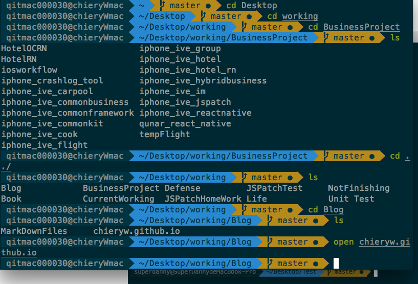

最近在推荐的文章中看到了一个有关工具类的推荐，其中有一篇是说的iterm,界面之绚丽,但是就吸引了我的注意。今天实现了相应的效果。先上图看一下最终的效果

Solarized可以说是目前网络上最流行的配色解决方案，其优美的配色和众多软件的支持，成就了她现在的火爆。我们这里就使用它来进行iTerm2的配色 下载，解压，打开iTerm2的偏好设定，Profiles / Colors，最下面的Load Presets ... / Import... 直接加载iterm2-colors-solarized/Solarized Dark.itermcolors配色方案就可以了，这时候可以看到。看到效果了。
先下载Solarized解压文件
Import的时候选择该文件导入
众所周知在Unix/Linux系统下是存在很多不同的shell，常见的就有bash, csh，ksh，zsh等等。在Linux和MAC OS系统中，默认使用的是bash。这里我们要是功能更加强大的 zsh。这里可以通过Homebrew下载安装zsh：
brew install zsh
安装完成后，将zsh设置成系统默认shell，以代替bash。 用编辑器打开/etc/shells，在末尾添加/usr/local/bin/zsh,保存关闭。 在终端中执行以下命令
chsh -s /usr/local/bin/zsh
然后重新启动iTerm2，zsh就已经被配置成默认的shell了。
此时的zsh还是最初始的样子，我们要将其变成强大的终端，需要对其进行配置，为了让zsh产生想上面图片那样的效果，我们需要安装oh-my-zsh。
oh-my-zsh是一个功能强大框架，发布于Github。它可以让你以纯傻瓜的方式对zsh进行配置已得到强大的功能，这里是其发布页面，如果有什么疑问，都可以去这个页面进行查询，里面有最详细的说明。 on-my-zsh的安装支持自动和手动，为了省去麻烦，我建议优先使用自动，如果要使用手动安装，请查看安装说明。这里只说一下自动安装。 在终端里，如果你有curl，则在终端输入
curl -L http://install.ohmyz.sh | sh
这样oh-my-zsh就安装完成了。开始对其进行配置。
zsh的配置几乎都在~/.zshrc下面，用编辑器打开文件，你会看到很多选项，建议你感觉自己的需求进行配置，不懂得可以查询文档。这里我只说一下主题的配置。在~/.oh-my-zsh/themes存在各式各样的主题文件，每个主题的样子你可以通过这个网址进行查看，选好样式后，在.zshrc中的ZSH_THEME设置成你所选用的主题。重启iTerm2，便可以看到相应的效果。这里建议使用agnoster，比较好看。
做完上步后，iTerm2的大概样子应该跟我们的第一张图片差不多了，但是没有图片中的箭头，那是因为产生箭头效果是需要特殊字体支持的，这个字体最开始是一个叫Powerline的项目开始的，其目的是美化Vim中操作栏的字体状态使其产生箭头效果，当然这个被移植到了iTerm2上。
使用这种字体有两种方式，第一种就是用此项目的补丁程序对系统中现有的字体打补丁，然后再让iTerm2使用即可。如果你嫌麻烦，你可以直接使用作者已经打好补丁的字体。本人为了方便，直接下载了作者打完补丁的字体导入iTerm2，最终的效果便跟第一张图片中样式一样了。
这里下载了字体补丁之后，直接解压
cd 到当前字体文件夹
执行 ./install.sh
安装完字体库之后，把iTerm 2的设置里的Profile中的Text 选项卡中里的Regular Font和Non-ASCII Font的字体都设置成 Powerline的字体，我这里设置的字体是12pt Meslo LG S DZ Regular for Powerline
指令高亮效果作用是当用户输入正确命令时指令会绿色高亮，错误时命令红色高亮
1）cd到.zshrc所在目录
2）执行指令将工程克隆到当前目录
git clone git://github.com/zsh-users/zsh-syntax-highlighting.git
3）打开.zshrc文件，在最后添加下面内容
source XXX/zsh-syntax-highlighting/zsh-syntax-highlighting.zsh
保存文件。
注意：xxx代表.zshrc所在目录
4）cd ~/.oh-my-zsh/custom/plugins
5）再次打开.zshrc文件，在最后面添加下面内容
plugins=(zsh-syntax-highlighting)
保存文件。
文／SuperDanny（简书作者）
原文链接：http://www.jianshu.com/p/7de00c73a2bb
著作权归作者所有，转载请联系作者获得授权，并标注“简书作者”。